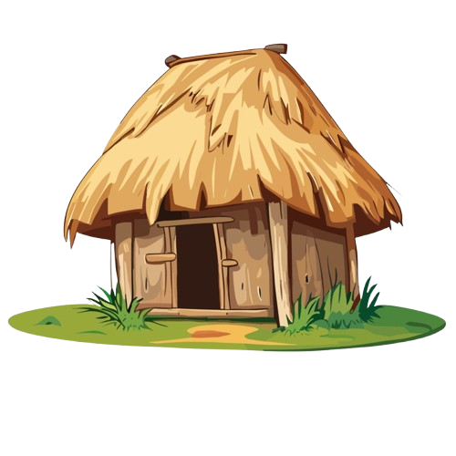
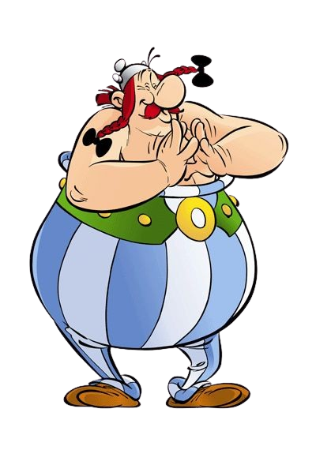
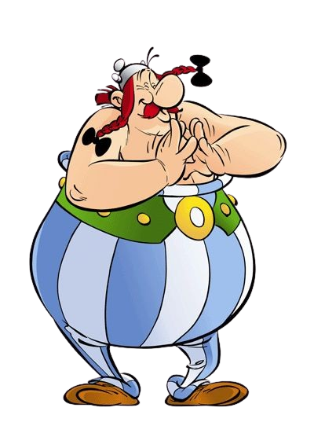
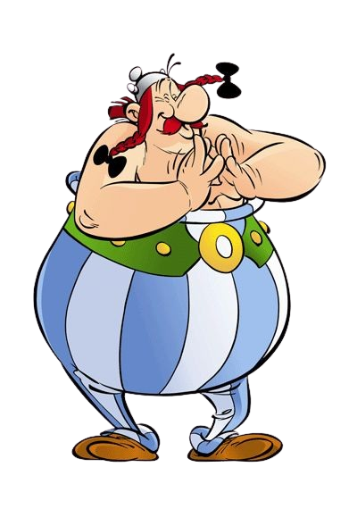

Cours
Devoirs
Messages
Ressources

ROADMAP DE FORMATION
Par Astérix le Gaulois
1. Arts des scribes :
HTML, CSS
2. Magie des runes :
JavaScript
3. Artisanat avancé :
Frameworks
4. Forge backend :
Bases, API
5. Projet final :
Ton propre village
"Par Toutatis ! Suis la voie des huttes !"
GUIDE DU VILLAGE
Par Obélix, livreur
Cours :
Les secrets des druides
Devoirs :
Forge tes compétences
Messages :
Consulte les augures
Ressources :
L'armurerie du savoir
💡 Conseil :
"Commence par Cours, puis Devoirs !"

 
